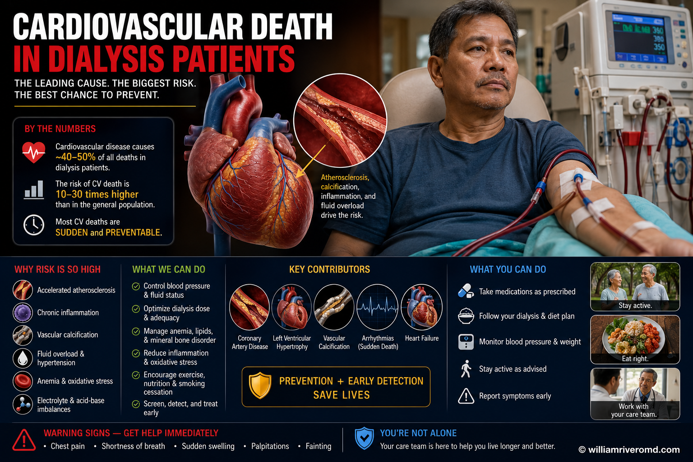
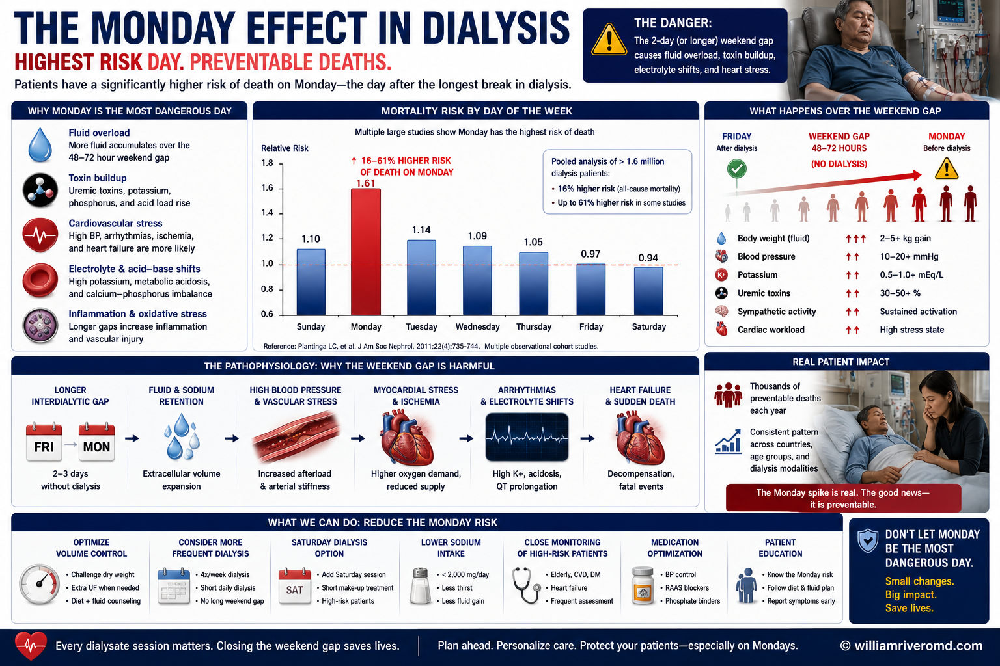
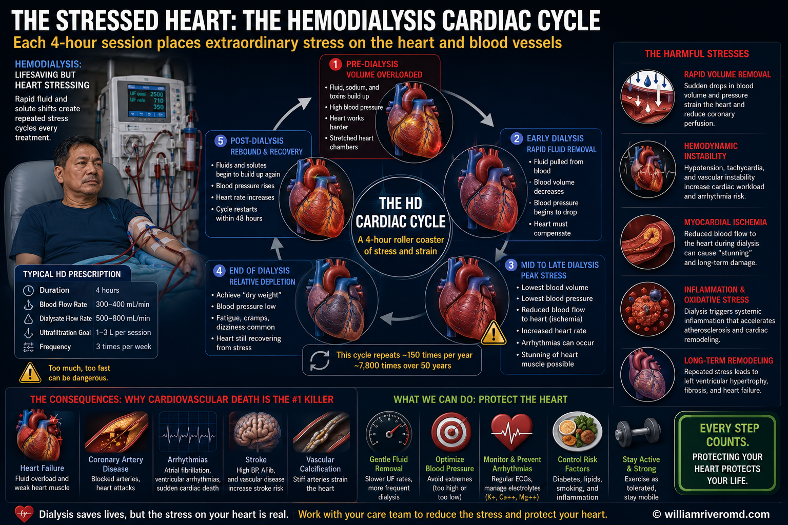
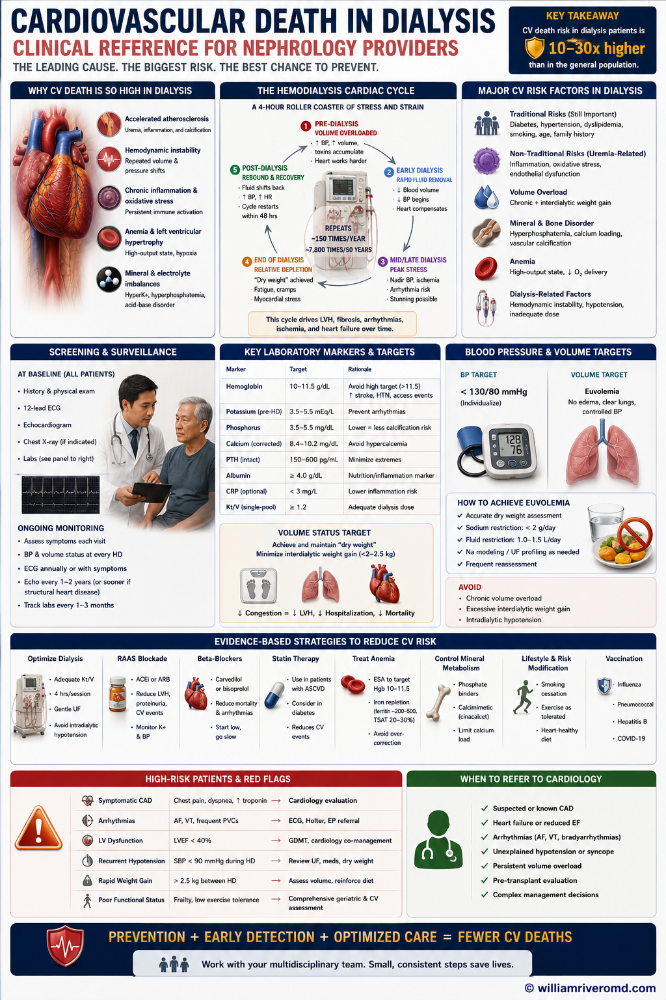

Why do so many dialysis patients die from heart problems?Bakit napakaraming pasyenteng nagda-dialysis ang namamatay dahil sa sakit sa puso?Ngano nga daghan kaayong pasyente sa dialysis ang mamatay tungod sa sakit sa kasingkasing?Bakit dakal a pasyenteng magda-dialysis ing mamate uli ning sakit king pusu?

This is one of the most common questions families ask after losing a loved one on dialysis — often suddenly, without warning. The honest answer is that dialysis patients carry an extraordinary cardiac burden that has multiple, overlapping causes. It is not simply that dialysis patients are "sick." It is that the disease process, the treatment itself, and the medications all contribute to a cardiac environment unlike any other in medicine.Ito ang isa sa pinakakaraniwang tanong ng mga pamilya matapos mawala ang isang mahal sa buhay na nagda-dialysis — kadalasan biglaan, walang babala. Ang tapat na sagot ay may pambihirang pasanin sa puso ang mga pasyenteng nagda-dialysis na may maraming, magkakapatong na sanhi. Hindi lamang basta "may sakit" ang mga pasyenteng nagda-dialysis. Ang proseso ng sakit, ang paggamot mismo, at ang mga gamot ay pawang nag-aambag sa isang kalagayan ng puso na wala sa iba pang bahagi ng medisina.Kini usa sa labing kasagarang pangutana sa mga pamilya human mawala ang usa ka minahal nga naa sa dialysis — kasagaran kalit, walay pasidaan. Ang tinuod nga tubag mao nga ang mga pasyente sa dialysis nagdala og talagsaon nga palas-anon sa kasingkasing nga adunay daghan, nagsapaw nga mga hinungdan. Dili lang basta "masakiton" ang mga pasyente sa dialysis. Ang proseso sa sakit, ang pagtambal mismo, ug ang mga tambal tanan nag-amot sa usa ka kahimtang sa kasingkasing nga lahi sa bisan unsa sa medisina.Iti ing metung karing pekakaraniwan a kutang da reng pamilya kaibat mawala ing metung a kaluguran a magda-dialysis — kalimbagan biglang, alang babala. Ing tapat a sagot iti ing atin pambihira lang pasan king pusu deng pasyenteng magda-dialysis a atin dakal, magkakapatung a sangkan. Ali mu basta "masakit" deng pasyenteng magda-dialysis. Ing proseso ning sakit, ing lunas mismu, at deng gamut pawang mag-ambag king metung a kalagayan ning pusu a alang aliwa king medisina.
To put the 10–30× figure in perspective: a 40-year-old on dialysis has approximately the same annual cardiac mortality risk as a 70-year-old in the general population who has already had a heart attack. This is not because dialysis is bad — it is because kidney failure itself does profound things to the heart, and dialysis adds its own layer of cardiac stress three times per week.Upang maunawaan ang 10–30× na bilang: ang isang 40-taong-gulang na nagda-dialysis ay may halos katulad na taunang panganib ng kamatayan sa puso gaya ng isang 70-taong-gulang sa pangkalahatang populasyon na nagkaroon na ng atake sa puso. Hindi ito dahil masama ang dialysis — ito ay dahil ang pagkabigo ng bato mismo ay gumagawa ng malalalim na pinsala sa puso, at ang dialysis ay nagdaragdag ng sariling antas ng stress sa puso tatlong beses kada linggo.Aron masabtan ang 10–30× nga numero: ang usa ka 40-anyos nga naa sa dialysis adunay halos parehas nga tinuig nga risgo sa kamatayan sa kasingkasing sama sa usa ka 70-anyos sa kinatibuk-ang populasyon nga nakaagi na og atake sa kasingkasing. Dili kini tungod kay daotan ang dialysis — kini tungod kay ang pagkapakyas sa bato mismo naghimo og lawom nga kadaot sa kasingkasing, ug ang dialysis nagdugang og kaugalingong lut-od sa stress sa kasingkasing tulo ka beses matag semana.Bang maintindian ing 10–30× a numeru: ing metung a 40-anyos a magda-dialysis ing atin halos parehung tinuig a panganib ning kamatayan king pusu antimong metung a 70-anyos king pangkabuuang populasyon a mekaatake na king pusu. Ali iti uli ning marok ing dialysis — iti uli ning ing pamagkabigu ning batu mismu gagawa yang malalalam a pinsala king pusu, at ing dialysis magdaragdag yang sariling antas ning stress king pusu atlung beses balang dominggu.
The good news is that this risk is not fixed. Dialysis prescription, medications, diet, and early warning recognition can all shift the curve — and this guide explains how.Ang magandang balita ay hindi nakatakda ang panganib na ito. Ang reseta ng dialysis, mga gamot, diyeta, at maagang pagkilala sa babala ay pawang makapagbabago sa kurba — at ipinapaliwanag ng gabay na ito kung paano.Ang maayong balita mao nga dili kini permanente nga risgo. Ang reseta sa dialysis, mga tambal, diyeta, ug sayo nga pag-ila sa pasidaan tanan makapausab sa kurba — ug kini nga giya nagpasabot kung unsaon.Ing mayap a balita iti ing ali nakatakda ing panganib a iti. Ing reseta ning dialysis, deng gamut, diyeta, at maranun a pamikilala king babala pawang makapagbayu king kurba — at ipapaliwanag ning giya a iti nung makananu.
The Monday effect: why the weekend gap is dangerous.Ang Monday effect: bakit mapanganib ang puwang tuwing katapusan ng linggo.Ang Monday effect: ngano nga peligroso ang luang sa hinapos sa semana.Ing Monday effect: bakit mapanganib ing puang king tauling aldo ning dominggu.
One of the most striking patterns in dialysis cardiac data is the "Monday effect" — a well-documented clustering of sudden cardiac death on the first dialysis day of the week. For patients on a Monday-Wednesday-Friday schedule, the peak cardiac death risk is on Monday morning. For those on Tuesday-Thursday-Saturday, it is Tuesday morning.Isa sa pinakakapansin-pansing pattern sa datos ng puso sa dialysis ay ang "Monday effect" — isang maayos na naidokumentong pagtutumpok ng biglaang kamatayan sa puso sa unang araw ng dialysis sa linggo. Para sa mga pasyenteng may iskedyul na Lunes-Miyerkoles-Biyernes, ang pinakamataas na panganib ng kamatayan sa puso ay tuwing Lunes ng umaga. Para sa mga nasa Martes-Huwebes-Sabado, ito ay tuwing Martes ng umaga.Usa sa labing makapatingala nga pattern sa datos sa kasingkasing sa dialysis mao ang "Monday effect" — usa ka maayong nadokumento nga pagpundok sa kalit nga kamatayan sa kasingkasing sa unang adlaw sa dialysis sa semana. Alang sa mga pasyente nga adunay iskedyul nga Lunes-Miyerkules-Biyernes, ang kinatas-ang risgo sa kamatayan sa kasingkasing mao ang Lunes sa buntag. Alang niadtong naa sa Martes-Huwebes-Sabado, kini ang Martes sa buntag.Metung karing pekakapansin-pansin a pattern king datos ning pusu king dialysis iti ing "Monday effect" — metung a mayap a nadokumento a pamitipun ning biglang kamatayan king pusu king mumunang aldo ning dialysis king dominggu. Para karing pasyenteng atin iskedyul a Lunes-Miyerkules-Biernes, ing pekamatas a panganib ning kamatayan king pusu iti ing Lunes king abak. Para karing atyu king Martes-Huebes-Sabadu, iti ing Martes king abak.

Research published in the New England Journal of Medicine (Pun et al., 2011) confirmed that using a very low dialysate potassium concentration (1.0 mEq/L) — designed to rapidly remove the weekend's accumulated potassium — actually increases arrhythmia risk. Rapid removal of potassium is more dangerous than slow, controlled removal.Ang pananaliksik na inilathala sa New England Journal of Medicine (Pun et al., 2011) ay nagpatunay na ang paggamit ng napakababang konsentrasyon ng potasa sa dialysate (1.0 mEq/L) — na dinisenyo upang mabilis na maalis ang naipon na potasa noong katapusan ng linggo — ay talagang nagpapataas ng panganib ng arrhythmia. Ang mabilis na pag-alis ng potasa ay mas mapanganib kaysa sa mabagal at kontroladong pag-alis.Ang panukiduki nga gimantala sa New England Journal of Medicine (Pun et al., 2011) nagpamatuod nga ang paggamit sa ubos kaayo nga konsentrasyon sa potasa sa dialysate (1.0 mEq/L) — nga gidisenyo aron paspas nga makuha ang natigom nga potasa sa hinapos sa semana — sa tinuod nagpataas sa risgo sa arrhythmia. Ang paspas nga pagkuha sa potasa mas peligroso kaysa sa hinay ug kontrolado nga pagkuha.Ing pananaliksik a mepalual king New England Journal of Medicine (Pun et al., 2011) mepatunayan na ing pamangamit king pekamababang konsentrasyon ning potasa king dialysate (1.0 mEq/L) — a dedisenyu bang masikan a mailako ing metipun a potasa king tauling aldo ning dominggu — talagang magpasampa king panganib ning arrhythmia. Ing masikan a pamanako king potasa mas mapanganib kaysa king mabagal at kontroladong pamanako.
What this means for youAno ang ibig sabihin nito para sa inyoUnsa ang buot ipasabot niini alang kanimoNanu ing kayabe na kaniti para keka
- Limit high-potassium foods during the 3-day weekend gap (Saturday dinner through Sunday) — this is when dietary adherence matters mostLimitahan ang pagkaing mataas sa potasa sa panahon ng 3-araw na puwang tuwing katapusan ng linggo (hapunan ng Sabado hanggang Linggo) — dito pinakamahalaga ang pagsunod sa diyetaLimitahi ang pagkaon nga taas sa potasa sa panahon sa 3-adlaw nga luang sa hinapos sa semana (panihapon sa Sabado hangtod Dominggo) — dinhi pinakamahinungdanon ang pagsunod sa diyetaLimitan me ing pamangan a matas king potasa king panaun ning 3-aldo a puang king tauling aldo ning dominggu (apunan ning Sabadu anggang Dominggu) — keni pekamahalaga ing pamanuknangan king diyeta
- Know your pre-dialysis potassium — ask your dialysis nurse what your Monday/Tuesday potassium levels typically runAlamin ang inyong potasa bago mag-dialysis — tanungin ang inyong dialysis nurse kung ano ang karaniwang antas ng inyong potasa tuwing Lunes/MartesHibaloi ang imong potasa una mag-dialysis — pangutan-a ang imong dialysis nurse kung unsa ang kasagarang lebel sa imong potasa matag Lunes/MartesAbalu me ing potasa mu bayu mag-dialysis — kutnan me ing dialysis nurse mu nung nanu ing karaniwang lebel ning potasa mu balang Lunes/Martes
- Do not skip dialysis — a missed session compounds the electrolyte problem dramaticallyHuwag laktawan ang dialysis — ang isang nalaktawang session ay lubhang nagpapalala sa problema sa electrolyteAyaw laktawi ang dialysis — ang usa ka nalaktawan nga session grabe nga makapasamot sa problema sa electrolyteE me laktawan ing dialysis — ing metung a melaktawan a session grabe yang magpalala king problema king electrolyte
- Tell your team if you experience palpitations, skipped beats, or weakness on Monday mornings before your sessionSabihin sa inyong team kung nakakaranas kayo ng palpitasyon, laktaw na tibok, o panghihina tuwing Lunes ng umaga bago ang inyong sessionSultihi ang imong team kung makasinati ka og palpitasyon, laktaw nga pitik, o kaluya matag Lunes sa buntag una sa imong sessionSabian me king team mu nung makaranas ka king palpitasyon, laktaw a pitik, o kaluyaan balang Lunes king abak bayu ing session mu
Every dialysis session is a cardiac stress test.Ang bawat dialysis session ay isang cardiac stress test.Ang matag dialysis session usa ka cardiac stress test.Ing balang dialysis session metung yang cardiac stress test.
Most patients think of dialysis as a cleaning process — and it is. But it is also a hemodynamic challenge that places measurable stress on the heart three times every week, year after year. Understanding this helps explain why heart disease accumulates in dialysis patients even when they feel fine between sessions.Iniisip ng karamihan ng pasyente ang dialysis bilang isang proseso ng paglilinis — at totoo iyon. Ngunit ito rin ay isang hemodynamic na hamon na naglalagay ng nasusukat na stress sa puso tatlong beses kada linggo, taon-taon. Ang pag-unawa rito ang tumutulong ipaliwanag kung bakit umiipon ang sakit sa puso sa mga pasyenteng nagda-dialysis kahit maayos ang pakiramdam nila sa pagitan ng mga session.Gihunahuna sa kadaghanan sa mga pasyente ang dialysis isip usa ka proseso sa paglimpyo — ug tinuod kana. Apan kini usab usa ka hemodynamic nga hagit nga nagbutang og masukod nga stress sa kasingkasing tulo ka beses matag semana, tuig-tuig. Ang pagsabot niini nagtabang pagpasabot kung ngano nga natigom ang sakit sa kasingkasing sa mga pasyente sa dialysis bisan maayo ilang pamati sa taliwala sa mga session.Iisipan da reng karakalan a pasyente ing dialysis antimong metung a proseso ning pamanlinis — at tutu ita. Dapot iti mu naman metung a hemodynamic a hamon a maglalage king asukat a stress king pusu atlung beses balang dominggu, banua-banua. Ing pamaintindi kaniti tuturu na ipaliwanag nung bakit tutipun ing sakit king pusu karing pasyenteng magda-dialysis agyang mayap ing pamdam da king pilatan da reng session.

Check your cardiac risk profile.Suriin ang inyong cardiac risk profile.Susiha ang imong cardiac risk profile.Suriin me ing cardiac risk profile mu.
The following 8 factors are the most important predictors of cardiovascular events in dialysis patients. Answer honestly — this is not a diagnostic test, but a structured checklist to bring to your nephrologist. The more "Yes" answers, the more urgently a formal cardiac evaluation is warranted.Ang sumusunod na 8 salik ay ang pinakamahalagang tagahula ng mga cardiovascular event sa mga pasyenteng nagda-dialysis. Sumagot nang tapat — hindi ito diagnostic test, kundi isang organisadong checklist na dadalhin sa inyong nephrologist. Habang mas maraming "Oo" na sagot, mas kagyat na kailangan ang isang pormal na cardiac evaluation.Ang mosunod nga 8 ka salik mao ang pinakamahinungdanong tigtag-an sa mga cardiovascular event sa mga pasyente sa dialysis. Tubaga nga matinud-anon — dili kini diagnostic test, kondili usa ka organisadong checklist nga dad-on sa imong nephrologist. Kung mas daghan ang "Oo" nga tubag, mas dinalian nga gikinahanglan ang usa ka pormal nga cardiac evaluation.Deng tutuki a 8 salik ila reng pekamahalagang tagahula da reng cardiovascular event karing pasyenteng magda-dialysis. Sumagut kang tapat — ali ya iti diagnostic test, nune metung a organisadong checklist a dalan king nephrologist mu. Nung mas dakal ing "Wa" a sagut, mas dinali a kailangan ing metung a pormal a cardiac evaluation.
This checklist is based on risk factors identified in USRDS registry analyses and the JMIR 2025 risk-cluster study of ESRD cardiovascular outcomes. It is a patient education tool, not a validated clinical instrument. A high score should prompt a conversation with your nephrologist — not alarm.
Warning signs to recognise — and act on.Mga palatandaan ng babala na dapat makilala — at pagkilosan.Mga timailhan sa pasidaan nga angay mailhan — ug lihokan.Deng tanda ning babala a dapat makilala — at daptanan.
Cardiac events in dialysis patients are not always preceded by the classic chest-pain presentation seen in movies. Know the full range of warning signs — some occur during your session, others appear in the days between.Ang mga cardiac event sa mga pasyenteng nagda-dialysis ay hindi palaging nauunahan ng klasikong pananakit ng dibdib na nakikita sa mga pelikula. Alamin ang buong hanay ng mga palatandaan ng babala — ang ilan ay nangyayari habang nagsa-session kayo, ang iba ay lumilitaw sa mga araw sa pagitan.Ang mga cardiac event sa mga pasyente sa dialysis dili kanunay giunahan sa klasiko nga sakit sa dughan nga makita sa mga sine. Hibaloi ang tibuok nga hanay sa mga timailhan sa pasidaan — ang uban mahitabo samtang naa ka sa session, ang uban motungha sa mga adlaw sa taliwala.Deng cardiac event karing pasyenteng magda-dialysis ali la pauli-uling inuuna ning klasikong pananakit ning salu a akakit karing pelikula. Abalu me ing bug-bug a hanay da reng tanda ning babala — deng aliwa malyari kabang atyu ka king session, deng aliwa lulual la karing aldo king pilatan.
- Chest tightness, pressure, or painPanikip, pagkabigat, o pananakit ng dibdibKahugot, kabug-at, o sakit sa dughanPanikip, pamagbayat, o pananakit ning salu
- Sudden shortness of breathBiglaang paghihirap sa paghingaKalit nga kalisod sa pagginhawaBiglang kahirapan king pamaginawa
- Palpitations, fluttering, or skipped beatsPalpitasyon, kabog, o laktaw na tibokPalpitasyon, kulba, o laktaw nga pitikPalpitasyon, kabug, o laktaw a pitik
- Dizziness or near-faintingPagkahilo o malapit nang mahimatayKalipong o hapit maluyaKalilyu o malapit nang malugmuk
- Sudden severe sweatingBiglaang matinding pagpapawisKalit nga grabe nga pansingotBiglang masakit a pamagpawas
- Arm or jaw pain without injuryPananakit ng braso o panga nang walang pinsalaSakit sa bukton o apapangig nga walay samadPananakit ning takde o pangi alang pinsala
- Feeling of impending doomPakiramdam na may masamang mangyayariBati nga adunay daotang mahitaboPamdam a atin marok a malyari
- New or worsening shortness of breath at restBago o lumalalang paghihirap sa paghinga kahit nagpapahingaBag-o o mosamot nga kalisod sa pagginhawa bisan nagpahulayBayu o lumalalang kahirapan king pamaginawa agyang magpainawa
- Waking up breathless at night (orthopnea)Paggising na hingal sa gabi (orthopnea)Pagmata nga hangka sa gabii (orthopnea)Pamagimata a hangal king bengi (orthopnea)
- Rapid or irregular heartbeat lasting > 5 minutesMabilis o hindi regular na tibok ng puso na tumatagal > 5 minutoPaspas o dili regular nga pitik sa kasingkasing nga molungtad > 5 minutoMasikan o ali regular a pitik ning pusu a tatagal > 5 minutu
- Sudden swelling of legs worse than usualBiglaang pamamaga ng mga binti na mas malala kaysa datiKalit nga paghubag sa mga bitiis nga mas grabe kaysa naandanBiglang pamamaga da reng bitis a mas malala kaysa dati
- Unusual fatigue with minimal activityHindi pangkaraniwang pagkapagod kahit kaunti lang ang ginagawaDili kasagarang kakapoy bisan gamay ra ang gibuhatAli karaniwan a pamagpagal agyang ditak mu ing gagawan
- Muscle weakness or cramps (may signal hyperkalemia)Panghihina o pulikat ng kalamnan (maaaring senyales ng hyperkalemia)Kaluya o kalambre sa kaunuran (mahimong timailhan sa hyperkalemia)Kaluyaan o pulikat ning laman (puedeng senyales ning hyperkalemia)
- Unexplained fainting or near-faintingHindi maipaliwanag na pagkahimatay o malapit nang mahimatayDili mapasabot nga pagkaluya o hapit maluyaAli mapaliwanag a pamaglugmuk o malapit nang malugmuk
- Crushing chest pain lasting > 5 minutesMatinding pananakit ng dibdib na tumatagal > 5 minutoGrabe nga sakit sa dughan nga molungtad > 5 minutoMasakit a pananakit ning salu a tatagal > 5 minutu
- Loss of consciousness or collapsePagkawala ng malay o pagbagsakPagkawala sa panimuot o pagkatumbaPamawala ning malay o pamagbagsak
- Inability to breathe lying flatHindi makahinga kapag nakahiga nang patagDili makaginhawa kung naghigda nga patagAli makaginawa nung makahiga a patag
- Sudden severe weakness on one side of the bodyBiglaang matinding panghihina sa isang bahagi ng katawanKalit nga grabe nga kaluya sa usa ka bahin sa lawasBiglang masakit a kaluyaan king metung a dake ning katawan
- Speech suddenly slurred or facial droopingBiglaang pagkautal ng pananalita o pagbaba ng mukhaKalit nga pagkautal sa sinultihan o pagkabitay sa nawongBiglang pamaghudhud king pananalita o pamagbaba ning lupa
- Someone collapses — begin CPR (cardiopulmonary resuscitation) if trainedMay bumagsak — simulan ang CPR (cardiopulmonary resuscitation) kung sanayAdunay natumba — sugdi ang CPR (cardiopulmonary resuscitation) kung bansayAtin mibagsak — umpisan me ing CPR (cardiopulmonary resuscitation) nung bihasa ka
Evidence-based ways to protect your heart on dialysis.Mga paraang batay sa ebidensya upang protektahan ang inyong puso habang nagda-dialysis.Mga paagi nga pinasukad sa ebidensya aron panalipdan ang imong kasingkasing samtang nag-dialysis.Deng paralan a base king ebidensya bang protektan ing pusu mu kabang magda-dialysis.
The cardiac risk in dialysis is real — but it is not fixed. Each of the following interventions has clinical trial or registry evidence behind it. Many require your nephrologist's involvement; some are things you can do yourself starting today.Totoo ang cardiac risk sa dialysis — ngunit hindi ito nakatakda. Bawat isa sa sumusunod na interbensyon ay may ebidensya mula sa clinical trial o registry. Marami ang nangangailangan ng partisipasyon ng inyong nephrologist; ang ilan ay mga bagay na kaya ninyong gawin mismo simula ngayon.Tinuod ang cardiac risk sa dialysis — apan dili kini permanente. Ang matag usa sa mosunod nga interbensyon adunay ebidensya gikan sa clinical trial o registry. Daghan ang nagkinahanglan sa pag-apil sa imong nephrologist; ang uban mga butang nga imong mahimo mismo sugod karon.Tutu ing cardiac risk king dialysis — dapot ali ya nakatakda. Ing balang metung karing tutuki a interbensyon atin ebidensya manibat king clinical trial o registry. Dakal ing mangailangan king pamamiabe ning nephrologist mu; deng aliwa ila reng bage a agyu mung gawan sarili mu magumpisa ngeni.
- Cooled dialysate (35–36°C): randomised trial evidence shows cooler dialysate reduces intradialytic hypotension episodes and myocardial stunning — the heart receives more blood flow during the session. Ask your nephrologist if your unit uses this protocolPinalamig na dialysate (35–36°C): ipinapakita ng ebidensya mula sa randomised trial na binabawasan ng mas malamig na dialysate ang mga yugto ng intradialytic hypotension at myocardial stunning — mas maraming daloy ng dugo ang natatanggap ng puso habang nagsa-session. Itanong sa inyong nephrologist kung ginagamit ng inyong unit ang protocol na itoGipabugnaw nga dialysate (35–36°C): ang ebidensya gikan sa randomised trial nagpakita nga ang mas bugnaw nga dialysate nagpakunhod sa mga panghitabo sa intradialytic hypotension ug myocardial stunning — mas daghang dagayday sa dugo ang madawat sa kasingkasing samtang naa sa session. Pangutan-a ang imong nephrologist kung gigamit sa imong unit kini nga protocolPepalamig a dialysate (35–36°C): ipapakit ning ebidensya manibat king randomised trial a binabawasan ning mas malamig a dialysate deng yugto ning intradialytic hypotension at myocardial stunning — mas dakal a agus ning daya ing tatanggapan ning pusu kabang atyu king session. Kutnan me ing nephrologist mu nung gagamitan ning unit mu ing protocol a iti
- Higher dialysate potassium (3.0 mEq/L): the shift away from 1.0–2.0 mEq/L dialysate potassium reduces the rate of rapid K+ removal and the associated arrhythmia risk — without allowing dangerously high blood potassium if diet is managedMas mataas na potasa sa dialysate (3.0 mEq/L): ang paglipat mula sa 1.0–2.0 mEq/L na potasa sa dialysate ay binabawasan ang bilis ng mabilis na pag-alis ng K+ at ang kaugnay na panganib ng arrhythmia — nang hindi hinahayaang mapanganib na tumaas ang potasa sa dugo kung pinamamahalaan ang diyetaMas taas nga potasa sa dialysate (3.0 mEq/L): ang pagbalhin gikan sa 1.0–2.0 mEq/L nga potasa sa dialysate nagpakunhod sa katulin sa paspas nga pagkuha sa K+ ug sa may kalabotang risgo sa arrhythmia — nga walay pagtugot nga peligroso nga motaas ang potasa sa dugo kung namandoan ang diyetaMas matas a potasa king dialysate (3.0 mEq/L): ing pamalipat manibat king 1.0–2.0 mEq/L a potasa king dialysate binabawasan na ing bilis ning masikan a pamanako king K+ at ing kaugnay a panganib ning arrhythmia — alang pauli-uling papaburen a mapanganib a sumampa ing potasa king daya nung pamandoan ing diyeta
- Longer session time: removing fluid slowly over a longer period (extended or nocturnal HD) dramatically reduces myocardial stunning; even adding 30 minutes per session reduces IDH (intradialytic hypotension) ratesMas mahabang session time: ang mabagal na pag-alis ng likido sa loob ng mas mahabang panahon (extended o nocturnal HD) ay lubhang nagpapababa ng myocardial stunning; kahit ang pagdagdag ng 30 minuto kada session ay nagpapababa ng bilang ng IDH (intradialytic hypotension)Mas taas nga session time: ang hinay nga pagkuha sa likido sulod sa mas taas nga panahon (extended o nocturnal HD) grabe nga nagpakunhod sa myocardial stunning; bisan ang pagdugang og 30 minuto kada session nagpakunhod sa gidaghanon sa IDH (intradialytic hypotension)Mas makaba a session time: ing mabagal a pamanako king danum king lalam ning mas makaba a panaun (extended o nocturnal HD) grabe yang magpababa king myocardial stunning; agyang ing pamagdagdag king 30 minutu kada session magpababa king bilang ning IDH (intradialytic hypotension)
- Never miss sessions: a skipped session compounds fluid and electrolyte accumulation exponentially — the risk is not linear, it is exponentialHuwag kailanman laktawan ang session: ang isang nalaktawang session ay nagpapatindi ng pag-ipon ng likido at electrolyte nang exponential — ang panganib ay hindi linear, ito ay exponentialAyaw gyud laktawi ang session: ang usa ka nalaktawan nga session nagpasamot sa pagtigom sa likido ug electrolyte og exponential — ang risgo dili linear, kini exponentialE me kailanman laktawan ing session: ing metung a melaktawan a session magpatindi king pamitipun ning danum at electrolyte a exponential — ing panganib ali ya linear, exponential ya
- Beta-blockers (carvedilol): the HDPAL trial showed carvedilol reduced cardiovascular events in dialysis patients with left ventricular dysfunction. Beta-blockers also reduce intradialytic BP swings. Discuss with your nephrologist if you are not already on oneBeta-blockers (carvedilol): ipinakita ng HDPAL trial na binawasan ng carvedilol ang mga cardiovascular event sa mga pasyenteng nagda-dialysis na may left ventricular dysfunction. Binabawasan din ng beta-blockers ang pabago-bagong BP habang nagda-dialysis. Talakayin sa inyong nephrologist kung wala pa kayo nitoBeta-blockers (carvedilol): gipakita sa HDPAL trial nga ang carvedilol nagpakunhod sa mga cardiovascular event sa mga pasyente sa dialysis nga adunay left ventricular dysfunction. Ang beta-blockers usab nagpakunhod sa pabalhin-balhin nga BP samtang nag-dialysis. Hisgoti sa imong nephrologist kung wala pa ka niiniBeta-blockers (carvedilol): pepakit ning HDPAL trial a binawasan ning carvedilol deng cardiovascular event karing pasyenteng magda-dialysis a atin left ventricular dysfunction. Binabawasan da naman ning beta-blockers ing pabayu-bayung BP kabang magda-dialysis. Pisabian me king nephrologist mu nung ala ka pa kaniti
- Phosphate binders: controlling phosphate reduces vascular calcification — a major driver of coronary artery stiffness. Take your binders with meals as prescribedPhosphate binders: ang pagkontrol sa phosphate ay binabawasan ang vascular calcification — isang pangunahing sanhi ng pagtigas ng coronary artery. Inumin ang inyong binders kasabay ng pagkain gaya ng nakaresetaPhosphate binders: ang pagkontrol sa phosphate nagpakunhod sa vascular calcification — usa ka nag-unang hinungdan sa pagtikig sa coronary artery. Imna ang imong binders dungan sa pagkaon sumala sa resetaPhosphate binders: ing pamagkontrol king phosphate binabawasan na ing vascular calcification — metung a pekamaragul a sangkan ning pamanigas ning coronary artery. Inuman me ing binders yu kayabe ning pamangan agpang king reseta
- ESAs (erythropoiesis-stimulating agents) for anaemia (Hgb 10–11.5 g/dL): correcting anaemia reduces the compensatory cardiac output that drives LV hypertrophy. Targeting too high (Hgb > 11.5 g/dL) increases stroke risk — the target mattersESAs (erythropoiesis-stimulating agents) para sa anemia (Hgb 10–11.5 g/dL): ang pagwawasto sa anemia ay binabawasan ang compensatory cardiac output na nagtutulak ng LV hypertrophy. Ang labis na mataas na target (Hgb > 11.5 g/dL) ay nagpapataas ng panganib ng stroke — mahalaga ang targetESAs (erythropoiesis-stimulating agents) alang sa anemia (Hgb 10–11.5 g/dL): ang pagtul-id sa anemia nagpakunhod sa compensatory cardiac output nga nagtukmod sa LV hypertrophy. Ang sobra ka taas nga target (Hgb > 11.5 g/dL) nagpataas sa risgo sa stroke — importante ang targetESAs (erythropoiesis-stimulating agents) para king anemia (Hgb 10–11.5 g/dL): ing pamagtuid king anemia binabawasan na ing compensatory cardiac output a nagtulak king LV hypertrophy. Ing sobra a matas a target (Hgb > 11.5 g/dL) magpasampa king panganib ning stroke — mahalaga ing target
- Statins: controversial in dialysis — the 4D and AURORA trials showed no benefit in prevalent HD patients, but early initiation (at CKD stages 3–4 before dialysis) does reduce events. If you were already on a statin before dialysis, continuing it is generally recommendedStatins: kontrobersyal sa dialysis — ipinakita ng 4D at AURORA trials na walang benepisyo sa mga umiiral na HD patient, ngunit ang maagang pagsisimula (sa CKD stages 3–4 bago mag-dialysis) ay nagpapababa ng mga event. Kung nasa statin na kayo bago mag-dialysis, karaniwang inirerekomenda ang pagpapatuloy nitoStatins: kontrobersyal sa dialysis — gipakita sa 4D ug AURORA trials nga walay benepisyo sa mga naglungtad nga HD patient, apan ang sayo nga pagsugod (sa CKD stages 3–4 sa dili pa mag-dialysis) nagpakunhod sa mga event. Kung naa na ka sa statin sa wala pa mag-dialysis, kasagarang girekomendar ang pagpadayon niiniStatins: kontrobersyal king dialysis — pepakit ning 4D at AURORA trials a alang benepisyo karing atyu nang HD patient, dapot ing maranun a pamagumpisa (king CKD stages 3–4 bayu mag-dialysis) magpababa king event. Nung atyu na ka king statin bayu mag-dialysis, karaniwan a inirerekomenda ing pamagpatuli kaniti
- Potassium restriction: particularly important on Friday–Sunday (pre-Monday session). High-potassium foods to limit: bananas, oranges, tomatoes, potatoes, kamote, pechay, coconut waterPagpigil sa potasa: lalong mahalaga tuwing Biyernes–Linggo (bago ang Lunes na session). Mga pagkaing mataas sa potasa na dapat limitahan: saging, dalandan, kamatis, patatas, kamote, pechay, buko juicePagpugong sa potasa: labi ka importante matag Biyernes–Dominggo (una sa Lunes nga session). Mga pagkaon nga taas sa potasa nga angay limitahan: saging, kahil, kamatis, patatas, kamote, pechay, tubig sa lubiPamigil king potasa: lalu yang mahalaga balang Biernes–Dominggu (bayu ing Lunes a session). Deng pamangan a matas king potasa a dapat limitan: saging, dalandan, kamatis, patatas, kamote, pechay, danum ning ngungut
- Fluid restriction (target interdialytic weight gain < 1 kg/day or < 5% dry weight): excessive fluid causes the heart to stretch and remodel — chronic fluid overload drives LVH progressionPagpigil sa likido (target na interdialytic weight gain < 1 kg/araw o < 5% ng dry weight): ang labis na likido ay nagiging sanhi upang mag-unat at mag-remodel ang puso — ang talamak na fluid overload ay nagtutulak sa pagsulong ng LVHPagpugong sa likido (target nga interdialytic weight gain < 1 kg/adlaw o < 5% sa dry weight): ang sobrang likido maoy hinungdan nga mag-inat ug mag-remodel ang kasingkasing — ang talamak nga fluid overload nagtukmod sa pagsulong sa LVHPamigil king danum (target a interdialytic weight gain < 1 kg/aldo o < 5% ning dry weight): ing sobra a danum ing sangkan bang mag-unat at mag-remodel ing pusu — ing talamak a fluid overload nagtulak king pagsulong ning LVH
- Phosphate restriction: processed foods, dark colas, fast food — all contain phosphate additives that are absorbed more completely than natural phosphatePagpigil sa phosphate: mga processed na pagkain, dark colas, fast food — lahat ay naglalaman ng phosphate additives na mas ganap na nasisipsip kaysa sa natural na phosphatePagpugong sa phosphate: mga processed nga pagkaon, dark colas, fast food — tanan adunay phosphate additives nga mas hingpit nga masuhop kaysa sa natural nga phosphatePamigil king phosphate: deng processed a pamangan, dark colas, fast food — ngan atin phosphate additives a mas ganap a asisipsip kaysa king natural a phosphate
- Echocardiogram: at dialysis initiation and every 1–2 years thereafter — tracks LVH progression, ejection fraction, and diastolic dysfunction. Request this if you haven't had one in the past 2 yearsEchocardiogram: sa simula ng dialysis at tuwing 1–2 taon pagkatapos — sinusubaybayan ang pagsulong ng LVH, ejection fraction, at diastolic dysfunction. Humiling nito kung wala pa kayong nagawa sa nakaraang 2 taonEchocardiogram: sa pagsugod sa dialysis ug matag 1–2 ka tuig human niana — gisubay ang pagsulong sa LVH, ejection fraction, ug diastolic dysfunction. Pangayo niini kung wala pa ka niini sulod sa miaging 2 ka tuigEchocardiogram: king umpisa ning dialysis at balang 1–2 banua kaibat — sinusubaybayan ing pagsulong ning LVH, ejection fraction, at diastolic dysfunction. Umaus kaniti nung ala ka pa mekagawa king milabas a 2 banua
- ECG (electrocardiogram): baseline and after any significant symptom — identifies pre-existing QT prolongation and conduction abnormalities that increase arrhythmia riskECG (electrocardiogram): baseline at pagkatapos ng anumang mahalagang sintomas — nakikilala ang dati nang QT prolongation at mga conduction abnormality na nagpapataas ng panganib ng arrhythmiaECG (electrocardiogram): baseline ug human sa bisan unsang mahinungdanong sintoma — nag-ila sa naglungtad nang QT prolongation ug mga conduction abnormality nga nagpataas sa risgo sa arrhythmiaECG (electrocardiogram): baseline at kaibat ning nanumang mahalagang sintomas — makilala na ing atyu nang QT prolongation at deng conduction abnormality a magpasampa king panganib ning arrhythmia
- Pre-dialysis electrolytes: your unit should be monitoring pre-HD potassium regularly; ask what your typical Monday potassium levels arePre-dialysis electrolytes: dapat regular na sinusubaybayan ng inyong unit ang pre-HD potasa; itanong kung ano ang karaniwang antas ng inyong potasa tuwing LunesPre-dialysis electrolytes: angay nga regular nga gibantayan sa imong unit ang pre-HD potasa; pangutan-a kung unsa ang kasagarang lebel sa imong potasa matag LunesPre-dialysis electrolytes: dapat regular a sinusubaybayan ning unit mu ing pre-HD potasa; kutnan me nung nanu ing karaniwang lebel ning potasa mu balang Lunes
- Cardiac troponin: mildly elevated in most dialysis patients (reduced clearance) — but a rising troponin trend is a red flag for myocardial injury requiring urgent evaluationCardiac troponin: bahagyang mataas sa karamihan ng mga pasyenteng nagda-dialysis (nabawasang clearance) — ngunit ang tumataas na trend ng troponin ay senyales ng myocardial injury na nangangailangan ng agarang ebalwasyonCardiac troponin: gamay nga taas sa kadaghanan sa mga pasyente sa dialysis (nakunhod nga clearance) — apan ang nagsaka nga trend sa troponin usa ka timailhan sa myocardial injury nga nagkinahanglan og dinaliang ebalwasyonCardiac troponin: ditak a matas karing karakalan a pasyenteng magda-dialysis (mebawasan a clearance) — dapot ing sumasampa a trend ning troponin metung yang senyales ning myocardial injury a mangailangan king dinaling ebalwasyon
Should I have a defibrillator (ICD)?Dapat ba akong magpakabit ng defibrillator (ICD)?Angay ba ako magpabutang og defibrillator (ICD)?Dapat ku waring magpakabit king defibrillator (ICD)?
An implantable cardioverter-defibrillator (ICD) is a device placed under the skin that constantly monitors the heart rhythm and delivers a shock if a fatal arrhythmia is detected. ICDs have saved many lives in the general population. In dialysis patients, the answer is more complicated — and honest discussion with your cardiologist and nephrologist is essential.Ang implantable cardioverter-defibrillator (ICD) ay isang device na inilalagay sa ilalim ng balat na patuloy na sinusubaybayan ang ritmo ng puso at nagbibigay ng shock kung matukoy ang isang nakamamatay na arrhythmia. Marami nang buhay ang nailigtas ng mga ICD sa pangkalahatang populasyon. Sa mga pasyenteng nagda-dialysis, mas komplikado ang sagot — at mahalaga ang tapat na pag-uusap sa inyong cardiologist at nephrologist.Ang implantable cardioverter-defibrillator (ICD) usa ka device nga gibutang sa ilawom sa panit nga kanunay nagbantay sa ritmo sa kasingkasing ug naghatag og shock kung makita ang usa ka makamatay nga arrhythmia. Daghan nang kinabuhi ang naluwas sa mga ICD sa kinatibuk-ang populasyon. Sa mga pasyente sa dialysis, mas komplikado ang tubag — ug importante ang tinuod nga panaghisgot sa imong cardiologist ug nephrologist.Ing implantable cardioverter-defibrillator (ICD) metung yang device a ilalage king lalam ning balat a patuloy a sinusubaybayan ing ritmo ning pusu at magbie king shock nung matukyu ing metung a makamate a arrhythmia. Dakal nang bie ing meligtas da reng ICD king pangkabuuang populasyon. Karing pasyenteng magda-dialysis, mas komplikadu ing sagut — at mahalaga ing tapat a pisasabian king cardiologist at nephrologist mu.
What the evidence shows in dialysis patientsAng ipinakita ng ebidensya sa mga pasyenteng nagda-dialysisAng gipakita sa ebidensya sa mga pasyente sa dialysisIng pepakit ning ebidensya karing pasyenteng magda-dialysis
The major ICD trials (MADIT-II, SCD-HeFT) excluded dialysis patients, so direct evidence is limited. Registry studies and subgroup analyses suggest:Hindi kasama ang mga pasyenteng nagda-dialysis sa mga pangunahing ICD trial (MADIT-II, SCD-HeFT), kaya limitado ang direktang ebidensya. Ipinapahiwatig ng mga registry study at subgroup analysis:Wala giapil ang mga pasyente sa dialysis sa mga nag-unang ICD trial (MADIT-II, SCD-HeFT), busa limitado ang direktang ebidensya. Gipasabot sa mga registry study ug subgroup analysis:Ali la kayabe deng pasyenteng magda-dialysis karing pekamaragul a ICD trial (MADIT-II, SCD-HeFT), inya limitadu ing direktang ebidensya. Ipapahiwatig da reng registry study at subgroup analysis:
- ICD therapy does reduce sudden cardiac death specifically in dialysis patientsAng ICD therapy ay talagang binabawasan ang biglaang kamatayan sa puso partikular sa mga pasyenteng nagda-dialysisAng ICD therapy tinuod nga nagpakunhod sa kalit nga kamatayan sa kasingkasing ilabi na sa mga pasyente sa dialysisIng ICD therapy talagang binabawasan na ing biglang kamatayan king pusu partikular karing pasyenteng magda-dialysis
- However, total mortality benefit is smaller than in non-dialysis patients because many dialysis deaths are from non-arrhythmic causes (heart failure, infection, stroke)Gayunman, mas maliit ang benepisyo sa kabuuang kamatayan kaysa sa mga hindi nagda-dialysis dahil maraming pagkamatay sa dialysis ay mula sa mga hindi-arrhythmic na sanhi (heart failure, impeksyon, stroke)Bisan pa niana, mas gamay ang benepisyo sa kinatibuk-ang kamatayan kaysa sa mga dili nag-dialysis tungod kay daghang kamatayan sa dialysis gikan sa mga dili-arrhythmic nga hinungdan (heart failure, impeksyon, stroke)Makanyan man, mas malati ing benepisyo king kabuuang kamatayan kaysa karing ali magda-dialysis uling dakal a kamatayan king dialysis ing manibat karing ali-arrhythmic a sangkan (heart failure, impeksyon, stroke)
- The infection risk of a transvenous ICD is approximately 3× higher in dialysis patients — the access to the bloodstream through the dialysis fistula or catheter creates an environment where device infections are more likely and harder to treatAng panganib ng impeksyon ng isang transvenous ICD ay halos 3× na mas mataas sa mga pasyenteng nagda-dialysis — ang daanan patungo sa dugo sa pamamagitan ng dialysis fistula o catheter ay lumilikha ng kapaligiran kung saan mas malamang at mas mahirap gamutin ang impeksyon sa deviceAng risgo sa impeksyon sa usa ka transvenous ICD hapit 3× nga mas taas sa mga pasyente sa dialysis — ang agianan padulong sa dugo pinaagi sa dialysis fistula o catheter naghimo og palibot diin mas lagmit ug mas lisod tambalan ang impeksyon sa deviceIng panganib ning impeksyon ning metung a transvenous ICD halos 3× yang mas matas karing pasyenteng magda-dialysis — ing dalan papunta king daya king pamamagitan ning dialysis fistula o catheter gagawa yang kapaligiran nung nu mas malamang at mas mahirap lunasan ing impeksyon king device
- A subcutaneous ICD (S-ICD) avoids transvenous leads and may be safer in dialysis patients who are not pacemaker-dependentAng subcutaneous ICD (S-ICD) ay umiiwas sa transvenous leads at maaaring mas ligtas sa mga pasyenteng nagda-dialysis na hindi nakadepende sa pacemakerAng subcutaneous ICD (S-ICD) naglikay sa transvenous leads ug mahimong mas luwas sa mga pasyente sa dialysis nga dili nagsalig sa pacemakerIng subcutaneous ICD (S-ICD) lulubad king transvenous leads at puedeng mas ligtas karing pasyenteng magda-dialysis a ali makadepende king pacemaker
- "Given my kidney disease, is the ICD benefit large enough to outweigh the infection risk?""Dahil sa aking sakit sa bato, sapat ba ang benepisyo ng ICD upang higitan ang panganib ng impeksyon?""Tungod sa akong sakit sa bato, igo ba ang benepisyo sa ICD aron labwan ang risgo sa impeksyon?""Uli ning sakit ku king batu, sapat ya waring benepisyo ning ICD bang lampasan ing panganib ning impeksyon?"
- "Would a subcutaneous ICD (S-ICD) be appropriate for me?""Angkop ba sa akin ang subcutaneous ICD (S-ICD)?""Angay ba kanako ang subcutaneous ICD (S-ICD)?""Angkop ya waring kaku ing subcutaneous ICD (S-ICD)?"
- "What is my ejection fraction, and does it reach the threshold for ICD consideration?""Ano ang aking ejection fraction, at umaabot ba ito sa threshold para isaalang-alang ang ICD?""Unsa ang akong ejection fraction, ug moabot ba kini sa threshold aron konsiderahon ang ICD?""Nanu ing ejection fraction ku, at dumatang ya waring iti king threshold bang isaalang-alang ing ICD?"
- "Would I be a candidate for a kidney transplant that might make my heart disease more manageable first?""Maaari ba akong maging kandidato para sa kidney transplant na maaaring gawing mas madaling pamahalaan muna ang aking sakit sa puso?""Mahimo ba ako nga kandidato alang sa kidney transplant nga mahimong maghimo sa akong sakit sa kasingkasing nga mas dali madumala una?""Puedi ku waring maging kandidato para king kidney transplant a puedeng gawan a mas malagua a pamandu munta ing sakit ku king pusu?"
For patients on the transplant waiting list, it is generally reasonable to delay ICD implantation until after transplantation — at which point cardiac function often improves significantly, and the infection risk drops considerably.Para sa mga pasyenteng nasa transplant waiting list, karaniwang makatuwiran na ipagpaliban ang pagkabit ng ICD hanggang matapos ang transplantation — kung saan kadalasang gumaganda nang malaki ang cardiac function, at malaki ang pagbaba ng panganib ng impeksyon.Alang sa mga pasyente nga naa sa transplant waiting list, kasagarang makatarunganon nga ipahulat ang pagbutang sa ICD hangtod human sa transplantation — diin kasagarang mouswag pag-ayo ang cardiac function, ug dako ang pagkunhod sa risgo sa impeksyon.Para karing pasyenteng atyu king transplant waiting list, karaniwan a makatuwiran a ipagpaliban ing pamagkabit king ICD anggang matapus ing transplantation — nu nu kalimbagan mumayap nang maragul ing cardiac function, at maragul ing pamagbaba ning panganib ning impeksyon.
Questions patients and families ask — answered directly.Mga tanong ng mga pasyente at pamilya — sinagot nang tuwiran.Mga pangutana sa mga pasyente ug pamilya — gitubag nga diretso.Deng kutang da reng pasyente at pamilya — sagutan a diretso.
This is one of the hardest questions in nephrology. Sudden cardiac death in dialysis is common, and in most cases it occurs in patients who appeared stable on their last assessment. This does not mean nothing could have been done — it reflects how unpredictable the dialysis cardiac environment is. What is true is that optimising dialysis adequacy, controlling electrolytes, using cardioprotective medications, and regular cardiac monitoring all reduce the risk. They cannot eliminate it. Grief is appropriate. Guilt should not be part of the picture.Ito ang isa sa pinakamahirap na tanong sa nephrology. Karaniwan ang biglaang kamatayan sa puso sa dialysis, at sa karamihan ng pagkakataon ay nangyayari ito sa mga pasyenteng mukhang matatag sa kanilang huling pagsusuri. Hindi ito nangangahulugang wala nang magagawa — ipinapakita nito kung gaano kahirap hulaan ang kalagayan ng puso sa dialysis. Ang totoo, ang pag-optimize sa kasapatan ng dialysis, pagkontrol sa electrolyte, paggamit ng cardioprotective na gamot, at regular na cardiac monitoring ay pawang nagpapababa ng panganib. Hindi nila ito maaaring alisin nang tuluyan. Angkop ang pagdadalamhati. Hindi dapat bahagi ng larawan ang pagkakasala.Kini usa sa labing lisod nga pangutana sa nephrology. Kasagaran ang kalit nga kamatayan sa kasingkasing sa dialysis, ug sa kadaghanan mahitabo kini sa mga pasyente nga morag lig-on sa ilang kataposang pagsusi. Wala kini nagpasabot nga walay mahimo — nagpakita kini kung unsa ka lisod tag-anon ang kahimtang sa kasingkasing sa dialysis. Ang tinuod, ang pag-optimize sa kasarangan sa dialysis, pagkontrol sa electrolyte, paggamit sa cardioprotective nga tambal, ug regular nga cardiac monitoring tanan nagpakunhod sa risgo. Dili nila kini mawagtang sa hingpit. Angay ang kasubo. Dili angay nga bahin sa hulagway ang pagbasol sa kaugalingon.Iti ing metung karing pekamahirap a kutang king nephrology. Karaniwan ing biglang kamatayan king pusu king dialysis, at king karakalan a pagkakataon malyari ya iti karing pasyenteng lupang matatag king tauling pamanyuri da. Ali ne kabaldugan a alang nang agawa — ipapakit na nung makananu kahirap hulaan ing kalagayan ning pusu king dialysis. Ing tutu, ing pag-optimize king kasapatan ning dialysis, pamagkontrol king electrolyte, pamangamit king cardioprotective a gamut, at regular a cardiac monitoring pawang magpababa king panganib. Ali de agyu alilan a tuluyan. Angkop ing pamagdalamhati. Ali ya dapat dake ning larawan ing pamagkasala.
Yes, with appropriate medical clearance and graduated intensity. Multiple studies show that intradialytic exercise (light cycling or walking during the first two hours of dialysis, when the session is most hemodynamically stable) actually reduces intradialytic hypotension and improves cardiac function over time. The key is starting slowly, having staff monitoring available, and getting a baseline echocardiogram and exercise tolerance assessment from your nephrologist before beginning. See the linked Exercise Guide for CKD for a structured programme.Oo, na may angkop na medikal na pahintulot at unti-unting lakas. Ipinapakita ng maraming pag-aaral na ang intradialytic exercise (magaang pagbibisikleta o paglalakad sa unang dalawang oras ng dialysis, kung kailan pinakamatatag ang session sa hemodynamic) ay talagang binabawasan ang intradialytic hypotension at pinabubuti ang cardiac function sa paglipas ng panahon. Ang susi ay ang mabagal na pagsisimula, pagkakaroon ng staff na nakabantay, at pagkuha ng baseline echocardiogram at exercise tolerance assessment mula sa inyong nephrologist bago magsimula. Tingnan ang naka-link na Exercise Guide para sa CKD para sa isang organisadong programa.Oo, uban sa angay nga medikal nga pagtugot ug anam-anam nga kakusog. Daghang pagtuon ang nagpakita nga ang intradialytic exercise (magaan nga pagbisikleta o paglakaw sa unang duha ka oras sa dialysis, kung kanus-a pinakalig-on ang session sa hemodynamic) sa tinuod nagpakunhod sa intradialytic hypotension ug nagpauswag sa cardiac function sa paglabay sa panahon. Ang yawe mao ang hinay nga pagsugod, pagkabaton og staff nga nagbantay, ug pagkuha og baseline echocardiogram ug exercise tolerance assessment gikan sa imong nephrologist sa dili pa magsugod. Tan-awa ang naka-link nga Exercise Guide alang sa CKD alang sa usa ka organisadong programa.Wa, a atin angkop a medikal a pahintulot at unti-unting sikanan. Ipapakit da reng dakal a pamanigaral a ing intradialytic exercise (magaan a pamibisikleta o pamaglakad king mumunang aduang oras ning dialysis, nung kapilan pekamatatag ing session king hemodynamic) talagang binabawasan na ing intradialytic hypotension at pinabuti na ing cardiac function king pamanlabas ning panaun. Ing susi iti ing mabagal a pamagumpisa, pamikayaruan king staff a magbante, at pamanako king baseline echocardiogram at exercise tolerance assessment manibat king nephrologist mu bayu magumpisa. Lawan me ing naka-link a Exercise Guide para king CKD para king metung a organisadong programa.
Substantially, yes. Successful kidney transplantation removes the uremic stimulus for LVH, eliminates the recurrent hemodynamic stress of dialysis sessions, and allows LV mass to regress. Studies show LVH partially reverses within 1–2 years of successful transplantation. Cardiac mortality drops significantly compared to remaining on dialysis. This is one of the strongest arguments for pursuing transplant evaluation — not just for kidney function, but for the heart.Malaki, oo. Ang matagumpay na kidney transplantation ay inaalis ang uremic stimulus para sa LVH, tinatanggal ang paulit-ulit na hemodynamic stress ng mga dialysis session, at pinapayagan ang LV mass na bumalik. Ipinapakita ng mga pag-aaral na bahagyang bumabalik ang LVH sa loob ng 1–2 taon ng matagumpay na transplantation. Malaki ang pagbaba ng cardiac mortality kumpara sa pananatili sa dialysis. Ito ang isa sa pinakamalakas na argumento para ituloy ang transplant evaluation — hindi lamang para sa kidney function, kundi para sa puso.Dako, oo. Ang malampuson nga kidney transplantation nagwagtang sa uremic stimulus alang sa LVH, nagtangtang sa balik-balik nga hemodynamic stress sa mga dialysis session, ug nagtugot sa LV mass nga mokunhod. Ang mga pagtuon nagpakita nga bahin nga mobalik ang LVH sulod sa 1–2 ka tuig sa malampuson nga transplantation. Dako ang pagkunhod sa cardiac mortality kumpara sa pagpabilin sa dialysis. Kini usa sa labing kusog nga argumento alang sa pagpadayon sa transplant evaluation — dili lang alang sa kidney function, kondili alang sa kasingkasing.Maragul, wa. Ing matagumpay a kidney transplantation aalisan na ing uremic stimulus para king LVH, tatanggal na ing paulit-ulit a hemodynamic stress da reng dialysis session, at papaburen na ing LV mass a mibalik. Ipapakit da reng pamanigaral a ditak a mibalik ing LVH king lalam ning 1–2 banua ning matagumpay a transplantation. Maragul ing pamagbaba ning cardiac mortality kumpara king pamanatili king dialysis. Iti ing metung karing pekamasikan a argumento bang ituli ing transplant evaluation — ali mu para king kidney function, nune para king pusu.
Peritoneal dialysis (PD) offers some potential cardiac advantages: it removes fluid and solutes continuously rather than in abrupt 3×-weekly bursts, avoiding the hemodynamic instability of intermittent hemodialysis. Studies suggest PD patients have fewer intradialytic hypotension episodes and may have slower LVH progression in early years. However, PD has its own limitations — technique survival, peritonitis risk, and high-glucose dialysate effects on the peritoneal membrane. This is a genuine, individual clinical discussion worth having with your nephrologist if you are currently on HD and have significant cardiac instability.Ang peritoneal dialysis (PD) ay nag-aalok ng ilang posibleng bentahe sa puso: inaalis nito ang likido at solute nang tuloy-tuloy sa halip na sa biglaang 3×-kada-linggong pagbugso, na umiiwas sa hemodynamic instability ng intermittent hemodialysis. Ipinapahiwatig ng mga pag-aaral na mas kaunti ang mga intradialytic hypotension episode ng mga pasyenteng PD at maaaring mas mabagal ang pagsulong ng LVH sa mga unang taon. Gayunman, may sariling limitasyon ang PD — technique survival, panganib ng peritonitis, at epekto ng high-glucose dialysate sa peritoneal membrane. Ito ay isang tunay at personal na klinikal na talakayan na sulit ilahad sa inyong nephrologist kung kasalukuyan kayong nasa HD at may malaking cardiac instability.Ang peritoneal dialysis (PD) naghatag og pipila ka posibleng bentaha sa kasingkasing: gikuha niini ang likido ug solute nga padayon imbes sa kalit nga 3×-kada-semana nga pagbuto, nga naglikay sa hemodynamic instability sa intermittent hemodialysis. Ang mga pagtuon nagpasabot nga mas gamay ang mga intradialytic hypotension episode sa mga pasyente sa PD ug mahimong mas hinay ang pagsulong sa LVH sa unang mga tuig. Bisan pa niana, ang PD adunay kaugalingong limitasyon — technique survival, risgo sa peritonitis, ug epekto sa high-glucose dialysate sa peritoneal membrane. Kini usa ka tinuod ug personal nga klinikal nga panaghisgot nga takos ipaambit sa imong nephrologist kung karon naa ka sa HD ug adunay dako nga cardiac instability.Ing peritoneal dialysis (PD) mag-alok yang mapilan a posibleng bentaha king pusu: aalisan na ing danum at solute a tuluy-tuloy imbes king biglang 3×-kada-dominggung pamagbugsu, a lulubad king hemodynamic instability ning intermittent hemodialysis. Ipapahiwatig da reng pamanigaral a mas kaunti deng intradialytic hypotension episode da reng pasyenteng PD at puedeng mas mabagal ing pagsulong ning LVH karing mumunang banua. Makanyan man, atin sariling limitasyon ing PD — technique survival, panganib ning peritonitis, at epektu ning high-glucose dialysate king peritoneal membrane. Iti ing metung a tutu at personal a klinikal a pisasabian a sulit ilahad king nephrologist mu nung kasalukuyan kang atyu king HD at atin maragul a cardiac instability.
LVH is extremely common in dialysis patients — present in 75% at the time dialysis starts. Its presence is a risk factor but not a death sentence. The key questions are: Is it getting worse? Serial echocardiograms (not just ECGs) track this more accurately. And: Are the drivers of LVH being addressed? — anaemia, fluid overload, hypertension, and high-output state from the AV fistula are all potentially modifiable. An ejection fraction < 35% on echo is the threshold that typically triggers consideration of ICD therapy and cardiologist co-management.Napakakaraniwan ng LVH sa mga pasyenteng nagda-dialysis — matatagpuan sa 75% sa panahon ng pagsisimula ng dialysis. Ang presensya nito ay isang risk factor ngunit hindi hatol na kamatayan. Ang mga pangunahing tanong ay: Lumalala ba ito? Ang serial echocardiogram (hindi lamang ECG) ang mas tumpak na sumusubaybay dito. At: Tinutugunan ba ang mga sanhi ng LVH? — ang anemia, fluid overload, hypertension, at high-output state mula sa AV fistula ay pawang maaaring baguhin. Ang ejection fraction na < 35% sa echo ang threshold na karaniwang nagbubukas ng pag-iisip sa ICD therapy at co-management ng cardiologist.Kasagaran kaayo ang LVH sa mga pasyente sa dialysis — makita sa 75% sa panahon nga magsugod ang dialysis. Ang presensya niini usa ka risk factor apan dili silot nga kamatayan. Ang mga hinungdanong pangutana mao: Nagsamot ba kini? Ang serial echocardiogram (dili lang ECG) mas tukma nga nagsubay niini. Ug: Gitubag ba ang mga hinungdan sa LVH? — ang anemia, fluid overload, hypertension, ug high-output state gikan sa AV fistula tanan mahimong usbon. Ang ejection fraction nga < 35% sa echo mao ang threshold nga kasagarang nagpasugod sa paghunahuna sa ICD therapy ug co-management sa cardiologist.Pekakaraniwan ing LVH karing pasyenteng magda-dialysis — akakit king 75% king panaun ning pamagumpisa ning dialysis. Ing presensya na metung yang risk factor dapot ali hatul a kamatayan. Deng pekamaragul a kutang: Lumalala ya waring iti? Ing serial echocardiogram (ali mu ECG) ing mas tumpak a sumubaybay kaniti. At: Sasagutan da waring deng sangkan ning LVH? — ing anemia, fluid overload, hypertension, at high-output state manibat king AV fistula pawang puedeng bayuan. Ing ejection fraction a < 35% king echo ing threshold a karaniwan a magbukas king pamag-isip king ICD therapy at co-management ning cardiologist.
Aspirin and anticoagulants (like warfarin or rivaroxaban) are genuinely controversial in dialysis patients. Dialysis patients have simultaneously higher bleeding risk (due to platelet dysfunction in uraemia) and higher clotting risk (due to endothelial dysfunction). The KDIGO (Kidney Disease: Improving Global Outcomes) guidelines do not recommend routine aspirin for primary prevention in dialysis. For secondary prevention after a confirmed heart attack or stroke, aspirin is generally continued. Warfarin for atrial fibrillation in dialysis is particularly complex — discuss with your cardiologist and nephrologist together, as the bleeding-thrombosis balance is highly individual.Ang aspirin at mga anticoagulant (tulad ng warfarin o rivaroxaban) ay tunay na kontrobersyal sa mga pasyenteng nagda-dialysis. Ang mga pasyenteng nagda-dialysis ay may sabay na mas mataas na panganib ng pagdurugo (dahil sa platelet dysfunction sa uremia) at mas mataas na panganib ng pamumuo ng dugo (dahil sa endothelial dysfunction). Hindi inirerekomenda ng KDIGO (Kidney Disease: Improving Global Outcomes) na patnubay ang rutinang aspirin para sa primaryang pag-iwas sa dialysis. Para sa sekundaryang pag-iwas matapos ang nakumpirmang atake sa puso o stroke, karaniwang ipinagpapatuloy ang aspirin. Ang warfarin para sa atrial fibrillation sa dialysis ay lalong komplikado — talakayin nang sabay sa inyong cardiologist at nephrologist, dahil lubhang personal ang balanse ng pagdurugo at thrombosis.Ang aspirin ug mga anticoagulant (sama sa warfarin o rivaroxaban) tinuod nga kontrobersyal sa mga pasyente sa dialysis. Ang mga pasyente sa dialysis dungan nga adunay mas taas nga risgo sa pag-agas sa dugo (tungod sa platelet dysfunction sa uremia) ug mas taas nga risgo sa pagbara sa dugo (tungod sa endothelial dysfunction). Ang KDIGO (Kidney Disease: Improving Global Outcomes) nga giya wala nagrekomendar sa rutinaryong aspirin alang sa primaryong paglikay sa dialysis. Alang sa sekondaryong paglikay human sa nakumpirmar nga atake sa kasingkasing o stroke, kasagarang gipadayon ang aspirin. Ang warfarin alang sa atrial fibrillation sa dialysis labi ka komplikado — hisgoti nga dungan sa imong cardiologist ug nephrologist, kay hilabihan ka personal ang balanse tali sa pag-agas ug thrombosis.Ing aspirin at deng anticoagulant (antimong warfarin o rivaroxaban) tutu lang kontrobersyal karing pasyenteng magda-dialysis. Deng pasyenteng magda-dialysis atin sabay a mas matas a panganib ning pamagdaya (uli ning platelet dysfunction king uremia) at mas matas a panganib ning pamumu ning daya (uli ning endothelial dysfunction). Ali inirerekomenda ning KDIGO (Kidney Disease: Improving Global Outcomes) a patnubay ing rutinang aspirin para king primaryang pamanlikas king dialysis. Para king sekundaryang pamanlikas kaibat ning nakumpirma a atake king pusu o stroke, karaniwan a ipagpatuli ing aspirin. Ing warfarin para king atrial fibrillation king dialysis lalu yang komplikadu — pisabian a sabay king cardiologist at nephrologist mu, uling lubhang personal ing balanse ning pamagdaya at thrombosis.
CV Death in Dialysis: Pathophysiology Framework
Sudden cardiac death in ESRD is the convergence of structural remodelling (uremic cardiomyopathy), episodic hemodynamic injury (intradialytic myocardial stunning), and electrophysiological instability (intradialytic arrhythmias). Each mechanism is independently modifiable; their interaction creates risk exceeding the sum of parts.

Uremic cardiomyopathy
LVH is present in 75% of patients at dialysis initiation and its prevalence increases with dialysis vintage. Two distinct phenotypes exist — and both are relevant to SCD risk:
- Concentric LVH (pressure overload — driven by hypertension, arterial stiffness from medial calcification, increased aortic pulse-wave velocity): relative wall thickness increased, cavity normal or reduced → diastolic dysfunction, elevated filling pressures
- Eccentric LVH (volume overload — driven by chronic fluid retention, high-output state from AVF, anaemia-driven ↑ cardiac output): cavity dilated → systolic dysfunction, ↓ EF in advanced cases
Both phenotypes share a common endpoint: interstitial fibrosis from cumulative ischaemia, myocyte loss, and uremic toxin-mediated fibroblast activation. Fibrosis creates re-entry circuits — the electrophysiological substrate for sustained ventricular tachyarrhythmia and SCD.
Intradialytic myocardial stunning
McIntyre and colleagues demonstrated that 35% of HD sessions produce new regional wall motion abnormalities (RWMAs) on stress echocardiography — a finding that correlates directly with post-HD troponin elevation and is independently associated with long-term cardiac mortality. The mechanism is ischaemic: IDH → ↓ coronary perfusion pressure in the context of already-impaired coronary reserve (calcified, stiff vessels, endothelial dysfunction) → subendocardial ischaemia → stunning. Unlike classic angina, stunning in this context is often clinically silent — patients report only fatigue or mild dyspnoea during IDH episodes, if anything at all. Cumulative intradialytic stunning drives progressive myocardial fibrosis independent of epicardial coronary artery disease.
Intradialytic arrhythmia — mechanisms
Continuous cardiac monitoring during HD (Holter-equivalent) reveals clinically significant arrhythmias in 30–76% of sessions across published series. Key electrophysiological triggers:
- Rapid trans-membrane K+ flux: K+ gradient drives outward K+ current that modulates action potential duration; rapid extracellular K+ removal shortens APD heterogeneously across the myocardium, increasing dispersion of repolarization — the substrate for VT/VF. The rate of K+ removal, not the total amount, is the proximate trigger
- Dialysate calcium and QTc: low dialysate Ca²⁺ (1.25 mmol/L) produces ionised hypocalcaemia during HD → QTc prolongation → Torsades de Pointes risk. Dialysate Ca²⁺ ≥ 1.5 mmol/L reduces this risk without significantly worsening vascular calcification risk in most patients
- Autonomic dysfunction: sympathovagal imbalance from uraemia → reduced heart rate variability → impaired protective reflexes against VT initiation. Reduced HRV is an independent predictor of SCD in ESRD
- Acute alkalosis: bicarbonate dialysis generates metabolic alkalosis mid-session → shifts K+ intracellularly → transient hypokalemia superimposed on rapid dialytic K+ removal
- The 3-day gap (Monday effect): inter-dialysis K+ accumulation during the 72-hour weekend gap (mean ΔK+ 1.0–1.5 mEq/L, Friday → Monday) followed by aggressive removal generates maximal repolarization dispersion. USRDS mortality data confirm 2–3× SCD excess on first session day of the week for MWF and TThSat schedules
Vascular calcification and coronary insufficiency
CKD-MBD (chronic kidney disease–mineral and bone disorder) drives medial calcification of coronary arteries — distinct from intimal atherosclerotic plaque and not captured by standard Framingham risk scoring. Coronary artery calcium scores in dialysis patients are 2–3 SD above age-matched general population controls. Calcified coronaries have impaired vasodilatory reserve: coronary flow reserve (CFR < 2.0) is present in the majority of long-term HD patients even without obstructive CAD. This creates vulnerability to ischaemia at lower workloads — and during each HD session.
JMIR 2025 risk-cluster framework
Machine-learning cluster analyses of ESRD longitudinal cohorts (JMIR Digital Health, 2025) identify 3 distinct CV risk phenotypes with differing predominant mechanisms and intervention targets:
- Cluster A — Young, diabetic, rapid progressors: predominantly vascular/ischaemic mechanism; high CAD burden; statin-intensive management, aggressive BP control, early transplant evaluation
- Cluster B — Elderly, LVH-dominant, inadequate dialysis: predominantly structural/stunning mechanism; high IDH burden; cooled dialysate, extended HD time, carvedilol, echo surveillance
- Cluster C — Electrolyte-instability phenotype: predominantly arrhythmic mechanism; recurrent hyperkalemia; higher dialysate K+, dietary re-counselling, potassium-binding agents (patiromer), consider Holter monitoring
Cluster assignment guides preferential intervention and is consistent with the multi-mechanism model above.
Systematic cardiac evaluation in the dialysis patient.
At dialysis initiation and every 1–2 years thereafter (post-dry-weight target, ideally on a non-dialysis day or ≥ 24h post-HD to eliminate acute volume effects). Key parameters: LV mass index (LVMI), relative wall thickness (RWT — phenotype: concentric vs eccentric), LV ejection fraction (EF), E/e' ratio (diastolic function), global longitudinal strain (GLS < −15% = subclinical systolic dysfunction before EF falls). EF < 35% = ICD evaluation threshold.
Look for: QTc prolongation (> 460 ms men, > 470 ms women = arrhythmia risk; > 500 ms = high risk), LVH criteria (Cornell voltage), pre-existing bundle branch block (modifies ICD programming), ST changes. Repeat post-any medication change likely to affect QTc (fluoroquinolones, antifungals, anti-emetics, antipsychotics — all commonly used in dialysis patients).
Indications for Holter or telemetry during HD session: unexplained pre-HD syncope, witnessed palpitations during HD, recurrent IDH without clear volume cause, survivor of out-of-hospital cardiac arrest. Intradialytic arrhythmias detected: classify by timing (early = electrolyte-driven; late session = ischaemic). Ambulatory Holter between sessions: captures inter-dialysis arrhythmia burden; 48h preferred to capture session-to-session variation.
Troponin T and I are chronically elevated in most dialysis patients (hs-TnT: median ~50 ng/L, upper reference limit 19 ng/L in general population). A single value is therefore uninterpretable — use serial measurements (0h and 3h): a ≥ 20% rise from baseline defines acute myocardial injury in ESRD. BNP (B-type natriuretic peptide) / NT-proBNP (N-terminal pro–B-type natriuretic peptide): elevated at baseline (reduced clearance); use individually trending values, not population cut-offs. NT-proBNP > 1000 pg/mL on a post-HD dry-weight assessment correlates with significant cardiac dysfunction in dialysis.
Standard exercise stress testing is limited in dialysis (physical deconditioning, baseline ECG abnormalities, peripheral vascular disease). Pharmacological stress imaging (dobutamine stress echo or vasodilator nuclear perfusion) is preferred. Coronary angiography: consider when stress imaging is positive, EF declines acutely, or ACS (acute coronary syndrome) is suspected (rising troponin trend + symptoms). Contrast load: pre-hydrate with bicarbonate; residual renal function, if any, should be protected — refer to contrast nephropathy guide.
Targeted cardioprotective strategies in ESRD.
Dialysis prescription modification
| Intervention | Evidence | Mechanism | Practical Implementation |
|---|---|---|---|
| Cooled dialysate (35–36°C) | RCT (Selby et al.); 2× reduction in intradialytic myocardial stunning | ↓ vasodilatation → ↑ cardiac preload → ↓ IDH frequency | Standard 37°C → set to 35.5°C; most patients tolerate well; monitor for shivering in elderly |
| Dialysate K⁺ ≥ 3.0 mEq/L | Observational; Pun NEJM 2011 (low K⁺ dialysate → arrhythmia risk) | ↓ rate of trans-membrane K⁺ flux → ↓ repolarization dispersion | Raise from 2.0 to 3.0 mEq/L; monitor pre-HD K⁺; add dietary counselling + patiromer if K⁺ remains > 6.0 mEq/L |
| Dialysate Ca²⁺ ≥ 1.5 mmol/L | Mechanistic; observational correlates with ↓ QTc during HD | Prevents mid-session ionised hypocalcaemia → ↓ QTc prolongation | Upgrade from 1.25 mmol/L; recheck PTH (parathyroid hormone) and bone mineral targets at 3 months |
| Extended/incremental HD | Observational cohorts; nocturnal HD RCT (FREQUENT HD): ↓ LV mass | ↓ ultra-filtration rate → ↓ IDH, ↓ stunning; ↓ volume overload → ↓ LVH regression | Add 30 min/session or increase to 4× weekly; nocturnal HD in select motivated patients |
Pharmacotherapy
- Carvedilol (HDPAL trial): 200 prevalent HD patients with LV dysfunction (EF 35–55%) randomised to carvedilol vs amlodipine — carvedilol significantly reduced composite CV events. Non-selective β-blockade + α1-blockade reduces sympathetic activation, LV remodelling, and intradialytic BP variability. Titrate: start 3.125 mg BID, up to 25 mg BID. Caution: bradycardia risk post-HD (relative hypotension); hold morning dose on HD day if SBP < 100 mmHg
- Statins: 4D trial (atorvastatin 20 mg in diabetic HD patients) and AURORA (rosuvastatin) showed no benefit on primary CV endpoint. However, both enrolled prevalent HD patients with likely already-calcified vessels. Statin initiation in CKD stages 3–4 before dialysis (SHARP trial) does reduce major atherosclerotic events. Current guidance: continue if started before dialysis; do not initiate de novo in dialysis-dependent ESRD without specific indication (e.g., post-ACS)
- Potassium-binding agents: patiromer (Veltassa) reduces chronic hyperkalemia burden and permits higher dialysate K+ without loss of K+ control — addressing the Monday-effect mechanism directly. Dose: 8.4 g/day with food, adjust to pre-HD K+ target 4.0–5.0 mEq/L. Note: binds other medications — separate dosing by ≥ 3 hours
- RAAS (renin–angiotensin–aldosterone system) blockade: ACE inhibitors / ARBs (angiotensin receptor blockers) reduce LV mass in dialysis patients in meta-analysis (Cice et al., 2003: enalapril ↓ mortality in HD patients with CHF). Continued use is appropriate for LVH, systolic dysfunction, and post-MI in dialysis patients. Caution: hypotension on HD days; hold on dialysis day morning dose or use lowest dose formulation. Not nephroprotective at this stage — benefit is purely cardiac
- ESA therapy: correct anaemia to Hgb 10–11.5 g/dL — reduces high-output cardiac state driving eccentric LVH. Targeting Hgb > 13 g/dL (CHOIR, TREAT trials) increases CV events — the target ceiling matters
ICD therapy in ESRD — decision framework
- Standard indications extrapolated to ESRD: EF ≤ 35% + NYHA Class II–III + optimal medical therapy ≥ 3 months; survivor of VT/VF arrest without reversible cause; sustained VT with haemodynamic compromise
- Attenuated benefit in ESRD: total mortality benefit is lower than in non-ESRD patients because ~50% of dialysis mortality is non-arrhythmic (infection, withdrawal from dialysis, HF); ICD prevents one mode of death without addressing others
- S-ICD preference: subcutaneous ICD (no transvenous leads) preferred in dialysis patients given 3× higher transvenous device infection rate; contraindicated if anti-bradycardia pacing needed or ATP (anti-tachycardia pacing) preferred over shock
- Wearable ICD (LifeVest): consider as bridge in patients with newly diagnosed low EF or post-MI pending LV recovery — a 3-month reassessment period is appropriate before permanent ICD implant, as EF can recover with anaemia correction, BP control, and dialysis optimisation
- Wearable defibrillator in pre-transplant period: reasonable option to bridge high-risk patients to transplantation while avoiding the infection risk of a permanent device